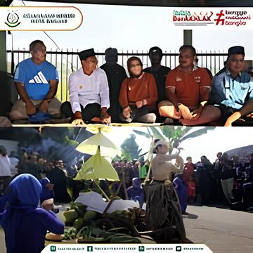

Kampung Pulo
Lokasi dan Gambaran Umum

Salah satu kampung adat di Kabupaten Garut, Jawa Barat, adalah Pulo.
Kampung ini terletak di kawasan wisata Situ Cangkuang di Kecamatan Leles, dengan pemandangan alam
yang indah dan danau kecil di sekitarnya. Kampung Pulo memiliki hubungan erat dengan Candi
Cangkuang. satu-satunya monumen Hindu yang ada di Jawa Barat.
Sejarah Kampung Adat Pulo

Sejarah kampung ini berkaitan dengan penyebaran Islam di wilayah tersebut. Kampung ini pertama kali
didirikan oleh Eyang Embah Dalem Arif Muhammad, seorang tentara kerajaan. Pada abad ke-17, Mataram
datang ke sini. Ia awalnya ditugaskan untuk menyerang Belanda di Batavia, tetapi setelah misinya
gagal, ia menetap di Cangkuang dan mulai menyebarkan Islam.
Struktur Organisasi Kampung Adat Pulo
Struktur organisasi Kampung Adat Pulo di Garut, Jawa Barat, sebagian besar mengikuti sistem
tradisional yang diwariskan dari generasi ke generasi, yang mencerminkan tata kelola sosial dan
budaya masyarakat adat setempat. Kampung Adat Pulo biasanya memiliki struktur organisasi berikut:
- Ketua Adat (Kuncen)
Sebagai pemimpin utama dalam adat istiadat dan spiritual.
- Sesepuh Kampung
Para tetua yang dihormati karena kebijaksanaan dan pengalaman mereka.
- Kepala Kampung
Mengelola pemerintahan desa dan hubungan dengan pihak eksternal.
- Tokoh Masyarakat
Para pemuka yang memiliki peran khusus, seperti bidang pendidikan,
pertanian, atau ekonomi.
- Warga Kampung
Setiap anggota masyarakat memiliki peran dalam menjaga adat dan tradisi.
Bangunan di Kampung Adat Pulo

Beberapa bangunan utama di Kampung Adat Pulo memiliki nilai adat dan budaya yang tinggi.
Ada aturan khusus yang harus dipatuhi oleh rumah-rumah di kampung ini agar adat tetap ada. Berikut
adalah beberapa nama rumah atau struktur di Kampung Adat Pulo:
- Imah Gede (Rumah Utama)
- Merupakan rumah yang dihuni oleh Kuncen (pemimpin adat).
-
Berfungsi sebagai pusat kegiatan adat dan tempat penyimpanan benda pusaka.
- Bale Patemon
- Tempat berkumpul warga untuk musyawarah adat.
- Digunakan juga sebagai
tempat penyambutan tamu atau acara ritual.
- Rumah Warga
- Rumah-rumah lainnya memiliki bentuk yang seragam dan tidak boleh diubah
secara sembarangan.
- Jumlah rumah di Kampung Adat Pulo dibatasi hanya tujuh rumah, yang
tidak boleh bertambah maupun berkurang sesuai dengan adat yang berlaku.
- Rumah-rumah ini
berbentuk rumah panggung dengan bahan utama kayu dan atap dari ijuk atau rumbia.
- Masjid Kampung Pulo
- Satu-satunya tempat ibadah bagi masyarakat Kampung Adat Pulo.
-
Memiliki arsitektur khas dengan unsur tradisional Sunda dan unsur Islam.
- Tempat
berlangsungnya kegiatan keagamaan seperti pengajian dan salat berjamaah.
Keunikan dan Aturan Adat

Kampung Adat Pulo memiliki sejumlah aturan adat yang unik, di antaranya:
- Jumlah Rumah Tetap: Terdapat aturan bahwa jumlah rumah di kampung ini harus tetap, yaitu enam
rumah untuk keturunan perempuan dan satu rumah untuk juru kunci. Jumlah ini tidak boleh
bertambah atau berkurang.
- Larangan Membangun Rumah Baru: Warga tidak boleh menambah rumah di dalam kampung untuk menjaga
kelestarian adat.
- Tidak Ada Rumah Menghadap ke Barat dan Timur: Semua rumah menghadap ke arah utara dan selatan,
sesuai dengan tradisi leluhur.
- Pelestarian Budaya dan Kepercayaan: Meskipun mayoritas penduduknya beragama Islam, mereka tetap
menghormati tradisi leluhur, termasuk menjaga keseimbangan alam dan adat istiadat.
Upacara-Upacara Adat Di Kampung Adat Pulo

Beberapa upacara adat yang masih dilakukan di Kampung Adat Pulo merupakan bagian dari tradisi warisan
leluhur. Upacara-upacara ini terkait erat dengan kepercayaan, adat istiadat, dan prinsip Islam yang
telah melekat dalam masyarakat Kampung Adat Pulo. Berikut adalah beberapa upacara adat yang masih
dilakukan:
- Upacara Ngalungsur Pusaka
- Dilaksanakan setiap 14 Maulid (Rabiul Awal) dalam penanggalan
Islam.
- Tujuannya untuk membersihkan dan merawat benda pusaka yang diwariskan oleh
leluhur.
-
Biasanya dipimpin oleh Kuncen (pemimpin adat) dan dihadiri oleh masyarakat setempat serta tamu
dari luar.
- Upacara Maulid Nabi
- Dilaksanakan bersamaan dengan peringatan kelahiran Nabi Muhammad SAW.
- Terdiri dari berbagai kegiatan keagamaan, seperti pembacaan Barzanji, doa bersama, serta
pembagian makanan kepada masyarakat.
- Upacara Seren Taun
- Merupakan upacara syukuran atas hasil panen padi yang diberikan oleh
alam.
- Sebagai bentuk rasa syukur kepada Tuhan dan leluhur yang menjaga kelangsungan hidup
masyarakat.
- Upacara Tingkeban (Mitoni)
- Upacara adat untuk ibu hamil yang memasuki usia 7 bulan
kehamilan.
- Bertujuan untuk memohon keselamatan ibu dan calon bayi.
- Tradisi Hajat Sasih
- Tradisi tahunan yang dilakukan sebagai bentuk syukur atas kehidupan
yang diberikan Tuhan
- Diisi dengan doa bersama, pembacaan kitab suci, serta berbagai
ritual adat.
Kehidupan Masyarakat
Penduduk Kampung Pulo kebanyakan bekerja sebagai petani dan pengrajin. Mereka tetap mengikuti tradisi
agraris dengan sistem pertanian tradisional dan terlibat dalam kegiatan adat yang terus berlangsung
hingga saat ini, seperti upacara dan ritual tertentu.
Wisata Budaya dan Daya Tarik
Karena tradisi unik, Kampung Adat Pulo menjadi daya tarik wisata budaya. Orang-orang yang mengunjungi
Situ Cangkuang dapat melihat langsung bagaimana kehidupan masyarakat adat berjalan dengan prinsip
budaya yang kuat. Beberapa daya tarik utama kota ini adalah:
- Candi Cangkuang, sebagai peninggalan sejarah Hindu-Buddha yang berdampingan dengan perkampungan
Islam.
- Rumah Adat Pulo, yang memiliki arsitektur khas dengan aturan adat yang ketat.
- Pemandangan Alam, karena kampung ini berada di sekitar danau yang memberikan suasana tenang dan
alami.
Upaya Pelestarian

Pemerintah daerah dan masyarakat setempat bekerja sama untuk menjaga kelestarian Kampung Adat Pulo
dengan berbagai cara, seperti:
- Menjaga Tradisi dan Aturan Adat: Warga tetap menjalankan aturan adat yang diwariskan
turun-temurun.
- Pengelolaan Wisata Berkelanjutan: Wisatawan yang datang diharapkan menghormati adat istiadat
setempat.
- Edukasi Budaya: Generasi muda diajarkan untuk memahami dan melestarikan tradisi kampung mereka.